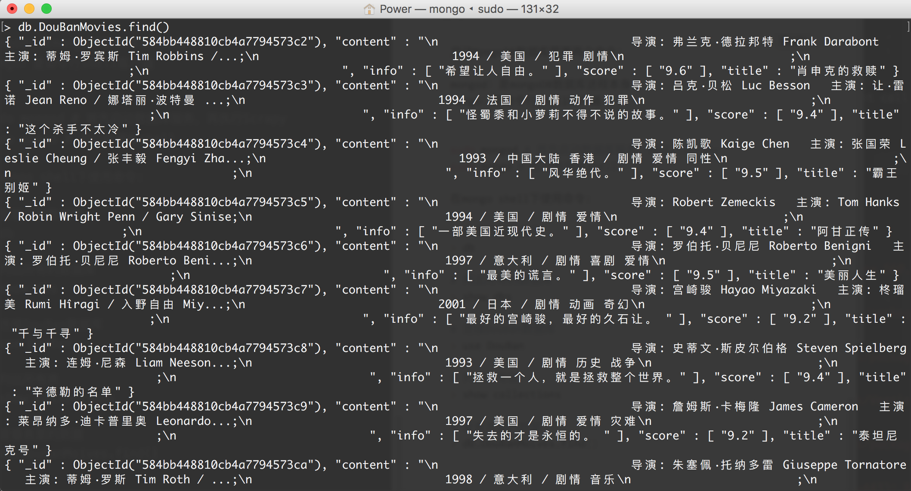

用Pymongo保存数据
爬取豆瓣电影top250movie.douban.com/top250的电影数据，并保存在MongoDB中。
items.py
class DoubanspiderItem(scrapy.Item):
# 电影标题
title = scrapy.Field()
# 电影评分
score = scrapy.Field()
# 电影信息
content = scrapy.Field()
# 简介
info = scrapy.Field()
spiders/douban.py
import scrapy
from doubanSpider.items import DoubanspiderItem
class DoubanSpider(scrapy.Spider):
name = "douban"
allowed_domains = ["movie.douban.com"]
start = 0
url = 'https://movie.douban.com/top250?start='
end = '&filter='
start_urls = [url + str(start) + end]
def parse(self, response):
item = DoubanspiderItem()
movies = response.xpath("//div[@class=\'info\']")
for each in movies:
title = each.xpath('div[@class="hd"]/a/span[@class="title"]/text()').extract()
content = each.xpath('div[@class="bd"]/p/text()').extract()
score = each.xpath('div[@class="bd"]/div[@class="star"]/span[@class="rating_num"]/text()').extract()
info = each.xpath('div[@class="bd"]/p[@class="quote"]/span/text()').extract()
item['title'] = title[0]
# 以;作为分隔，将content列表里所有元素合并成一个新的字符串
item['content'] = ';'.join(content)
item['score'] = score[0]
item['info'] = info[0]
# 提交item
yield item
if self.start <= 225:
self.start += 25
yield scrapy.Request(self.url + str(self.start) + self.end, callback=self.parse)
pipelines.py
from scrapy.conf import settings
import pymongo
class DoubanspiderPipeline(object):
def __init__(self):
# 获取setting主机名、端口号和数据库名
host = settings['MONGODB_HOST']
port = settings['MONGODB_PORT']
dbname = settings['MONGODB_DBNAME']
# pymongo.MongoClient(host, port) 创建MongoDB链接
client = pymongo.MongoClient(host=host,port=port)
# 指向指定的数据库
mdb = client[dbname]
# 获取数据库里存放数据的表名
self.post = mdb[settings['MONGODB_DOCNAME']]
def process_item(self, item, spider):
data = dict(item)
# 向指定的表里添加数据
self.post.insert(data)
return item
settings.py
BOT_NAME = 'doubanSpider'
SPIDER_MODULES = ['doubanSpider.spiders']
NEWSPIDER_MODULE = 'doubanSpider.spiders'
ITEM_PIPELINES = {
'doubanSpider.pipelines.DoubanspiderPipeline' : 300
}
# Crawl responsibly by identifying yourself (and your website) on the user-agent
USER_AGENT = 'Mozilla/5.0 (Macintosh; Intel Mac OS X 10_11_3) AppleWebKit/537.36 (KHTML, like Gecko) Chrome/48.0.2564.116 Safari/537.36'
# MONGODB 主机环回地址127.0.0.1
MONGODB_HOST = '127.0.0.1'
# 端口号，默认是27017
MONGODB_PORT = 27017
# 设置数据库名称
MONGODB_DBNAME = 'DouBan'
# 存放本次数据的表名称
MONGODB_DOCNAME = 'DouBanMovies'
运行
启动MongoDB数据库需要两个命令：
mongod：是mongoDB数据库进程本身
mongo：是命令行shell客户端
sudo mongod # 首先启动数据库服务，再执行Scrapy
sudo mongo # 启动数据库shell
在mongo shell下使用命令:
# 查看当前数据库
> db
# 列出所有的数据库
> show dbs
# 连接DouBan数据库
> use DouBan
# 列出所有表
> show collections
# 查看表里的数据
> db.DouBanMoives.find()
